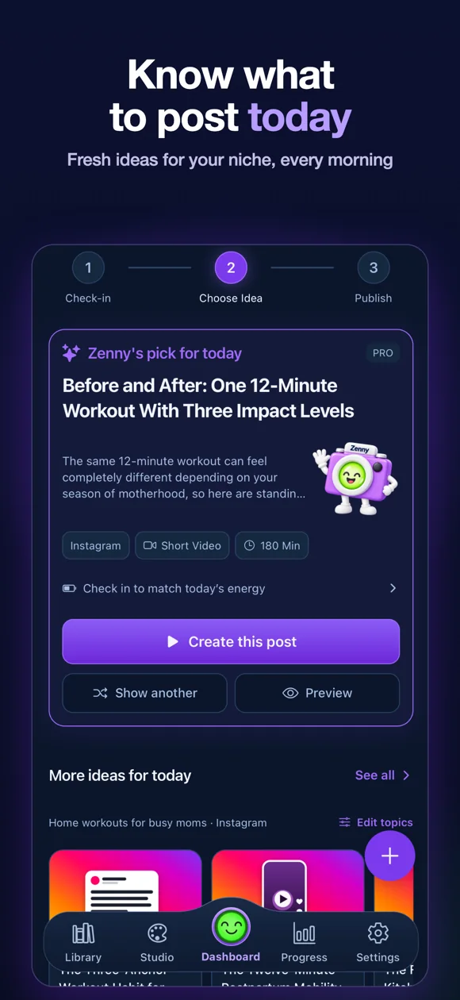
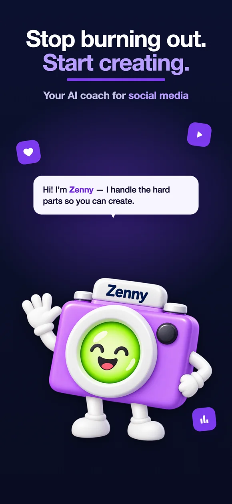
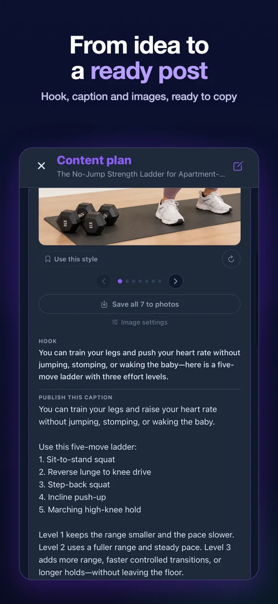

CreatorZen.
An AI content coach that tells creators what to post today — hook, script, caption and images ready to film — and plans around their energy so they keep posting without burning out.
- Organic downloads
- 5,000+
- Commits
- 1,393
- On the App Store
- v2.6
- Role Founder — product, UX, AI pipelines, analytics, QA and support. All of it.
- Loop Energy check-in → today's pick → a ready-to-film plan, every morning.
- AI Profile import with Apify + LLM analysis personalises ideas from day one, with fallbacks when data is thin.
- Growth PostHog funnels and user feedback show where activation breaks — then I fix it and ship.
Next.jsSupabaseOpenAIApifyPostHogiOS


